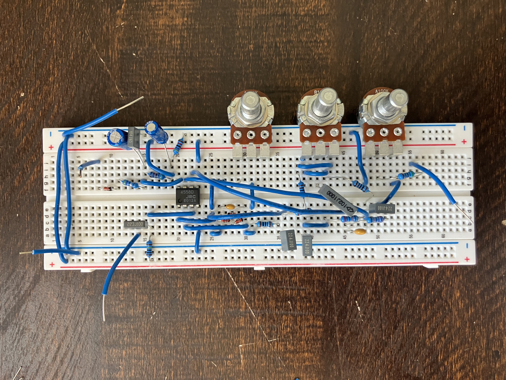
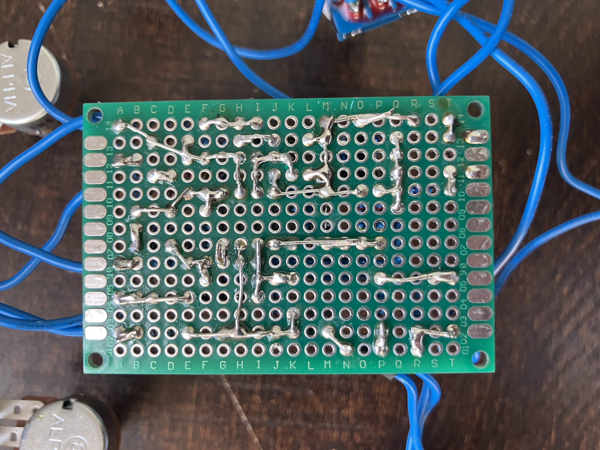
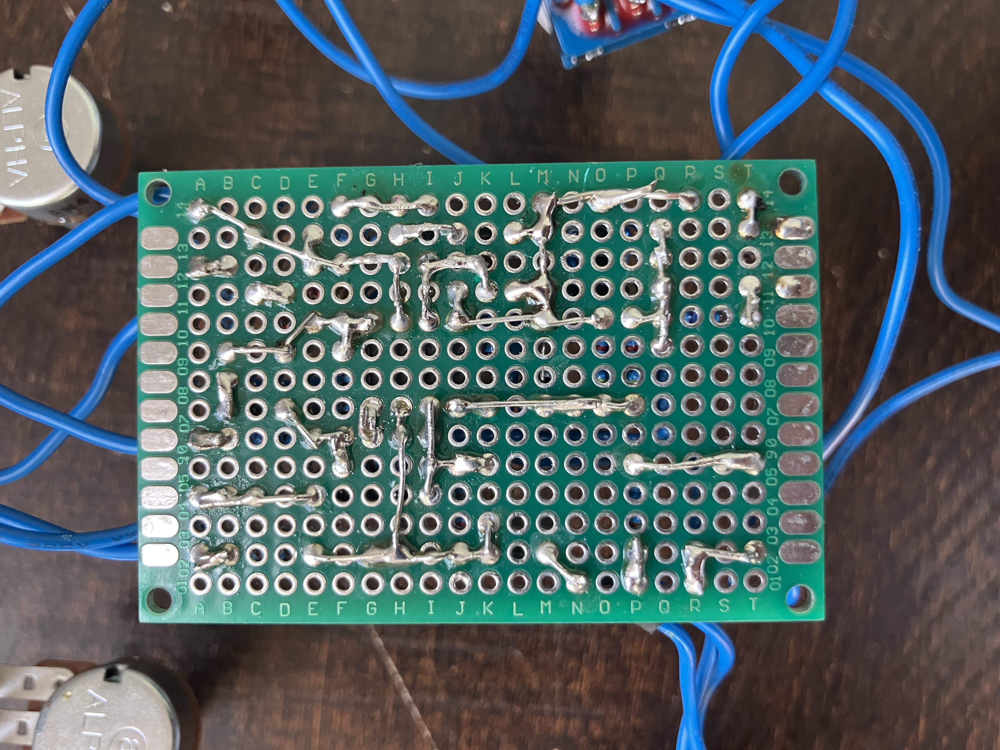

Overview
This project documents the design and build of a custom analog overdrive pedal. Below is a step-by-step breakdown with photos of each phase.
1. Components Laid Out

2. Breadboarding
Initial circuit verification using a breadboard to test gain, clipping, and tone circuit behavior.
3. PCB Assembly
 

Perfboard layout was designed and soldered. Clean wiring and diode clipping implemented here.
4. Final Enclosure

The pedal was mounted in a rugged enclosure with true bypass switching and external power jack.